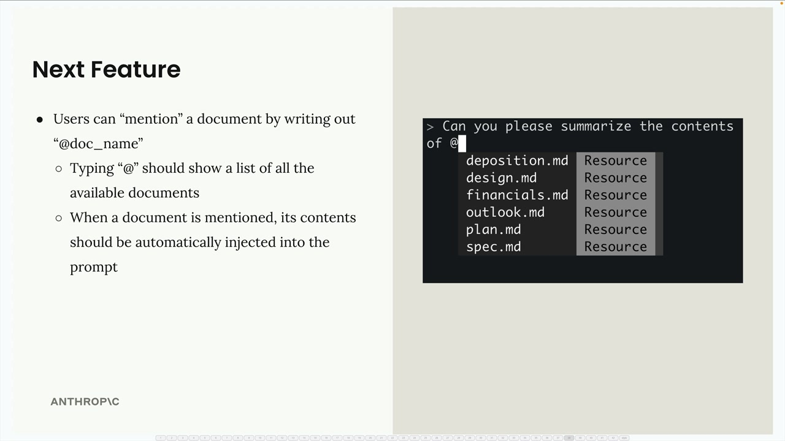
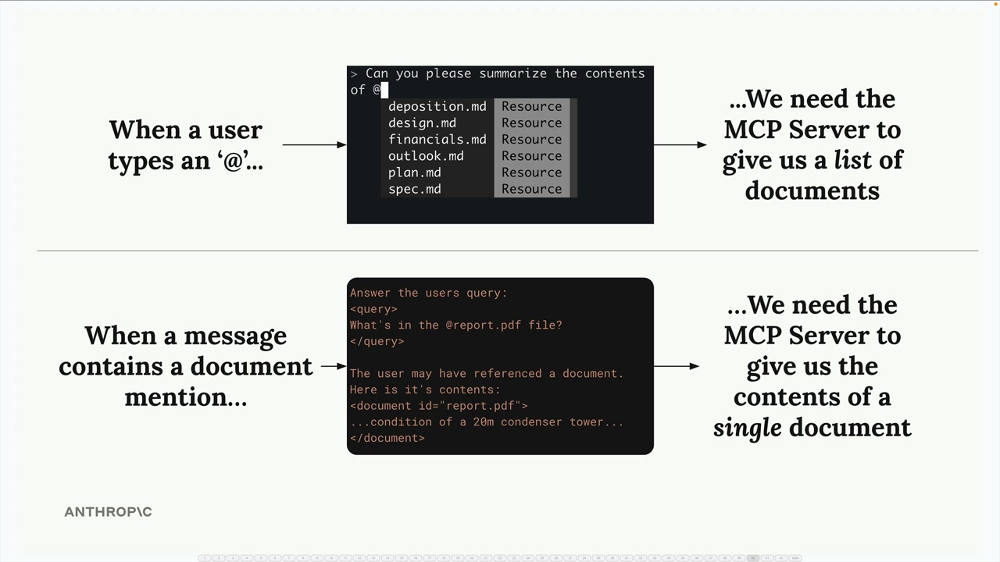
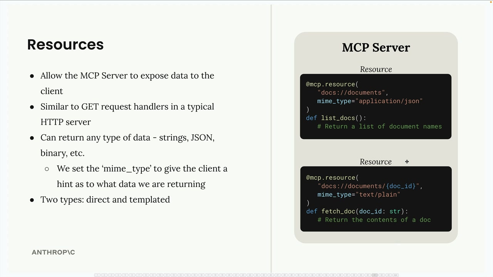
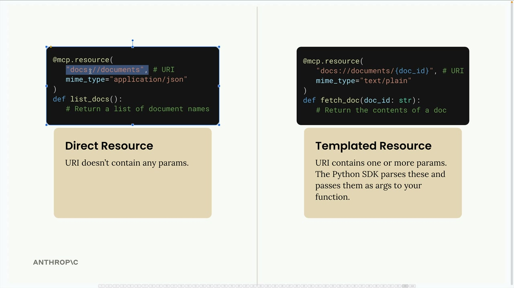
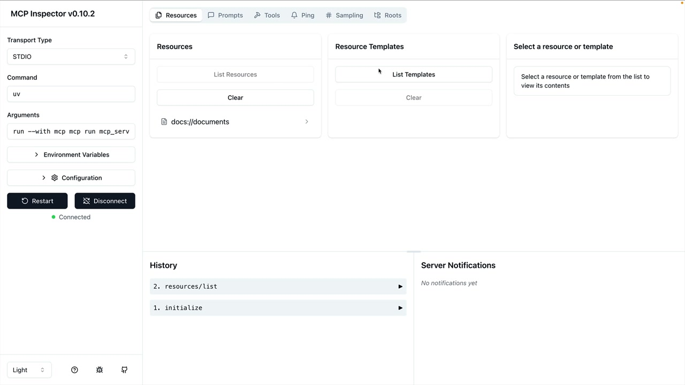
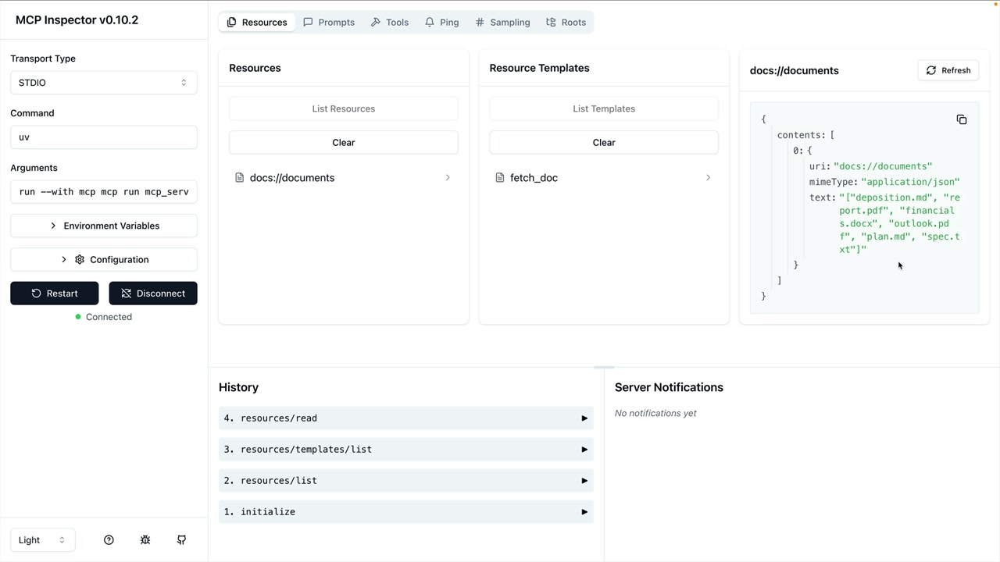

리소스 정의하기
MCP 서버의 리소스는 일반적인 HTTP 서버의 GET 요청 핸들러와 유사하게, 클라이언트에 데이터를 노출할 수 있게 해줍니다. 액션을 수행하는 것이 아니라 정보를 가져와야 하는 상황에 이상적입니다.
예시를 통한 리소스 이해
사용자가 @document_name을 입력해 파일을 참조할 수 있는 문서 멘션 기능을 만든다고 가정해 보겠습니다. 이를 위해 두 가지 작업이 필요합니다:
- 사용 가능한 모든 문서 목록 가져오기 (자동 완성용)
- 특정 문서의 내용 가져오기 (멘션 시)

사용자가 @를 입력하면 사용 가능한 문서를 표시해야 합니다. 멘션이 포함된 메시지를 전송하면 해당 문서의 내용이 Claude에게 전달되는 프롬프트에 자동으로 삽입됩니다.

리소스 작동 방식
리소스는 요청-응답 패턴을 따릅니다. 클라이언트가 URI와 함께 ReadResourceRequest를 전송하면 MCP 서버가 데이터로 응답합니다. URI는 접근하려는 리소스의 주소 역할을 합니다.

리소스 유형
리소스에는 두 가지 유형이 있습니다:

-
직접 리소스(Direct Resources):
docs://documents처럼 변하지 않는 정적 URI -
템플릿 리소스(Templated Resources):
docs://documents/{doc_id}처럼 매개변수가 있는 URI
템플릿 리소스의 경우, Python SDK가 URI에서 매개변수를 자동으로 파싱하여 함수에 키워드 인수로 전달합니다.
리소스 구현하기
리소스는 @mcp.resource() 데코레이터를 사용해 정의합니다. 두 가지 유형을 만드는 방법은 다음과 같습니다:
직접 리소스 (문서 목록 조회)
@mcp.resource(
"docs://documents",
mime_type="application/json"
)
def list_docs() -> list[str]:
return list(docs.keys())템플릿 리소스 (문서 내용 가져오기)
@mcp.resource(
"docs://documents/{doc_id}",
mime_type="text/plain"
)
def fetch_doc(doc_id: str) -> str:
if doc_id not in docs:
raise ValueError(f"Doc with id {doc_id} not found")
return docs[doc_id]MIME 타입
리소스는 문자열, JSON, 바이너리 등 모든 유형의 데이터를 반환할 수 있습니다. mime_type 매개변수는 클라이언트에게 반환되는 데이터의 종류를 알려줍니다:
-
application/json- 구조화된 JSON 데이터 -
text/plain- 일반 텍스트 콘텐츠 - 다양한 데이터 형식에 맞는 기타 유효한 MIME 타입
MCP Python SDK는 반환 값을 자동으로 직렬화합니다. JSON 문자열로 수동 변환할 필요가 없습니다.
리소스 테스트
MCP Inspector를 사용해 리소스를 테스트할 수 있습니다. 다음 명령으로 서버를 실행하세요:
uv run mcp dev mcp_server.py그런 다음 브라우저에서 inspector에 연결하세요. 다음을 볼 수 있습니다:

- Resources: 직접/정적 리소스 목록
- Resource Templates: 매개변수를 받는 템플릿 리소스 표시
리소스를 클릭하면 테스트해 볼 수 있으며, 클라이언트가 받게 될 정확한 응답 구조를 확인할 수 있습니다.

핵심 정리
- 리소스는 데이터를 노출하고, 도구는 액션을 수행합니다
- 정적 데이터에는 직접 리소스를, 매개변수가 있는 쿼리에는 템플릿 리소스를 사용하세요
- MIME 타입은 클라이언트가 응답 형식을 이해하는 데 도움을 줍니다
- SDK가 직렬화를 자동으로 처리합니다
- 템플릿 URI의 매개변수 이름이 함수 인수가 됩니다
리소스는 MCP 클라이언트에 데이터를 제공하는 깔끔한 방법으로, 문서 멘션, 파일 탐색, 또는 서버에서 정보를 가져와야 하는 모든 상황에서 활용할 수 있습니다.